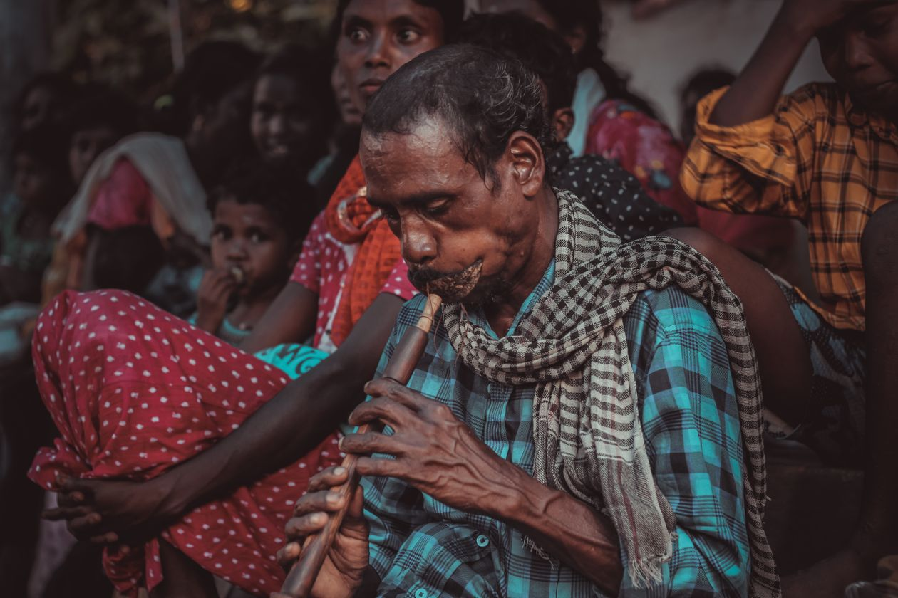

Bansuri · Hindustani classical
Breath, bamboo, and the raga’s hours.
A raga is not just a scale — it belongs to an hour. Bhairav belongs to first light, Malkauns to the middle of the night. I play solo concerts, accompany vocalists, record for film, and teach — and I programme every concert by the clock the tradition keeps.

The signature chart
Repertoire, by the hour
Six ragas from the current concert book, placed on the day they belong to. Pick one: the chart gives its thaat, its hour, its climb and descent — and you can hear the scale itself, synthesised in your browser, before you book anything.
The eight prahars — the day in eight three-hour watches. The lit segment is the selected raga’s watch.
The day clock
Marker at ≈ 6:30 am — Bhairav’s hour, as the light comes up.
Bhairav
First prahar of the day · roughly 6–9 am
Solemn and devotional — the raga of first light, all weight and stillness.
- Thaat
- Bhairav
- Vadi / Samvadi
- Dha (komal) / Re (komal)
- Typical duration
- 25–40 min, as a full alap–jor–jhala
- Where it sits
- A solo opening, or under a vocalist at a morning mehfil; tabla in vilambit ektal.
Pakad — the catch-phraseGa Ma Dha(komal) Pa, Ga Ma Re(komal) Sa. The flattened Re and Dha lean toward each other, and the slow oscillation — andolan — on Dha is the raga’s fingerprint.
Arohana, then avarohana — about 12 seconds.
The demonstration is synthesised in your browser — sine tones with breath noise, tuned in just intonation from an E bansuri’s Sa. It teaches the scale’s shape. It is not a recording, and it is not a performance: no meend, no gamak, no breath of a real player. For the real thing, come to a concert — the calendar is below.
The book
Work on offer
Four kinds of engagement, one register. If you are booking, this table plus the fee card below is the whole conversation in miniature.
| Engagement | Form | Forces | Length | Status |
|---|---|---|---|---|
| Solo baithak — ragas by the hour | Solo concert | Bansuri, tabla, tanpura | 90 min + interval | Booking |
| Accompaniment for khayal vocalists | Accompaniment | With your vocalist & tabla | Full concert | Booking |
| Jugalbandi — bansuri & sitar | Duet concert | Two leads, tabla, tanpura | 2 × 45 min | 2 dates left |
| Film & album sessions | Session | Studio, Pune or Mumbai | 3-hr call | Booking |
| Lessons — online & in Pune | Teaching | One to one, weekly | 60 min | Waitlist, Jan |
| School & college lec-dems | Demonstration | Talk, flute, questions | 45–60 min | Booking |
Fees, in print
What it costs
Published so a promoter can budget before writing. Every figure is a starting point for a standard engagement in Pune; the box below says honestly what moves it.
| Engagement | Fee | Covers |
|---|---|---|
| Solo concert | from ₹45,000 | Full evening baithak or stage concert, tabla and tanpura arranged by me. |
| Accompaniment | from ₹25,000 | Alongside your vocalist or instrumentalist, incl. one rehearsal call. |
| Film / album session | ₹12,000 / 3-hr call | One studio call in Pune; parts prepared from your cue sheet in advance. |
| Teaching | ₹1,500 / lesson | 60 minutes, one to one. Monthly plan: ₹5,000 for four weekly lessons. |
| Lec-dem | from ₹18,000 | Schools and colleges; instrument provided for students to try. |
What moves the price
Travel outside Pune–Mumbai (at cost, plus a travel day on long hauls) · a jugalbandi partner’s fee, billed at their rate · extra rehearsal calls beyond the first · festival-peak dates in December · a second performance on the same day. Nothing else is added later — no surprise line items.
Season calendar
Where the flute is, this winter
Confirmed dates. Open slots between them take bookings — the dawn and dusk concerts go first, because the ragas insist on their hours.
Sat · 12 Dec 2026
Dawn baithak — Bhairav
Private mehfil, Kothrud, Pune · 6:30 am start, as the raga asks.
Sat · 9 Jan 2027
Evening concert — Yaman
Sabha hall, Pune · solo with tabla & tanpura.
Sun · 24 Jan 2027
Jugalbandi — bansuri & sitar
College festival, Mumbai · Desh and a shared finale.
Sun · 14 Feb 2027
Recording session
Film score, studio in Andheri, Mumbai · closed session.
Sat · 6 Mar 2027
Late concert — Malkauns
Chamber series, Pune · 10 pm start, small room, no amplification by choice.
Sun · 21 Mar 2027
Season close — Bhairavi
Open-air morning concert, Pune · the concluding raga, as custom demands.
From the dawn concert
“He began Bhairav in near-darkness at half past six, and the hall stayed pin-drop silent for forty minutes. Our audience of two hundred included people who had never heard a morning raga at its own hour. Three of them booked him before breakfast.”